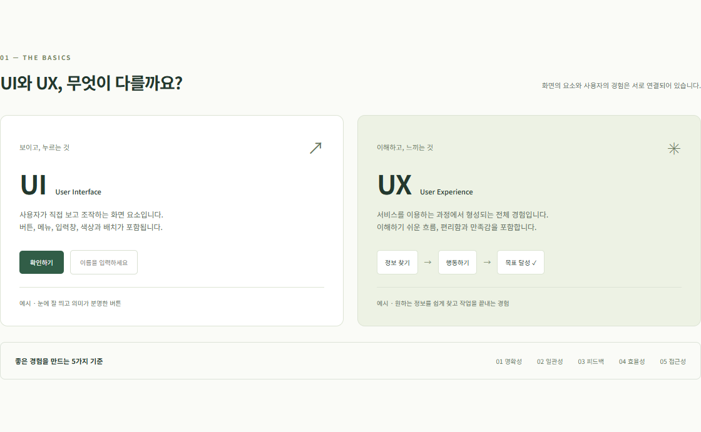

눈에 보이는 화면 요소
UIUser Interface
지금 보고 있는 메뉴, 버튼, 입력창이 UI입니다. 사용자가 무엇을 누르고 입력할지 분명하게 보여줍니다.
직접 확인 · 이 버튼을 누르면 목표 입력 영역으로 이동합니다.
UI/UX PROGRAMMING · WEEK 04
화면 크기에 따라 레이아웃 재구성하기
오늘의 학습 목표 정하기 과제 내용 보기 ↓viewport · width · max-width · Grid · 768px 미디어 쿼리
01 — ASSIGNMENT
3주차 페이지에 반응형 CSS를 적용한 4주차 실습입니다.
3주차에 완성한 HTML과 style.css를 그대로 이어서 사용하고, 콘텐츠 영역과 이미지에 width와 max-width를 적용해 화면 너비에 맞게 줄어들도록 했습니다.
실습 내용 카드는 CSS Grid로 열 수를 자동 조정하고, 768px 이하에서는 메뉴와 카드, 학습 목표 입력창과 버튼을 한 열로 배치했습니다.
실습 내용 보기
02 — PRACTICE
개념 비교, 코드 예제, 클릭과 피드백.
버튼과 입력창 같은 화면 요소, 사용 과정에서 느끼는 경험을 비교하고 좋은 경험의 다섯 가지 기준을 알아봅니다.
개념 예제 펼치기HTML, CSS, JavaScript 탭을 선택해 내용의 구조, 화면의 표현, 상호작용을 만드는 코드와 역할을 확인합니다.
코드 예제 펼치기버튼을 누르면 바뀌는 숫자와 메시지로 화면의 반응을 경험합니다. 초기화 버튼으로 다시 시작할 수도 있습니다.
인터랙션 예제 펼치기궁금한 예제를 펼쳐 이 페이지에서 바로 체험해 보세요.
지금 보고 있는 메뉴, 버튼, 입력창이 UI입니다. 사용자가 무엇을 누르고 입력할지 분명하게 보여줍니다.
직접 확인 · 이 버튼을 누르면 목표 입력 영역으로 이동합니다.
학습 내용을 이해하고 목표를 정한 뒤 예제를 체험하는 과정이 UX입니다. 원하는 내용을 쉽게 찾고 배울 수 있는지가 중요합니다.
생각해 보기 · 다음 행동이 자연스럽게 이어지나요?
탭을 선택해 HTML, CSS, JavaScript의 역할과 코드를 비교합니다.
HTML은 제목, 문단, 이동 링크에 의미와 구조를 부여합니다.
<section id="about">
<h2>과제 소개</h2>
<p>HTML 구조와 내부 이동 실습</p>
<a href="#features">실습 내용 보기</a>
</section>체험 버튼을 눌러보세요. 숫자와 메시지가 바뀌면 내 행동이 전달되었다는 것을 알 수 있습니다.
아래 버튼으로 첫 인터랙션을 만들어 보세요.
03 — STEPS
목표 작성 → 예제 확인 → 직접 실행
아래 입력창에 오늘 배우고 싶은 내용을 한 줄로 적어 학습 방향을 정합니다.
실습 내용에서 예제를 펼쳐 UI와 UX를 비교하고 HTML, CSS, JavaScript 코드 탭을 차례로 선택합니다.
인터랙션 실습 버튼을 누르고 화면의 변화를 확인하며 목표로 정한 내용을 복습합니다.